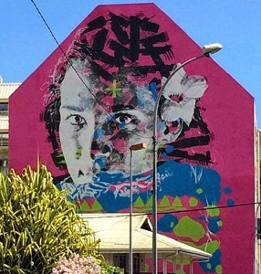
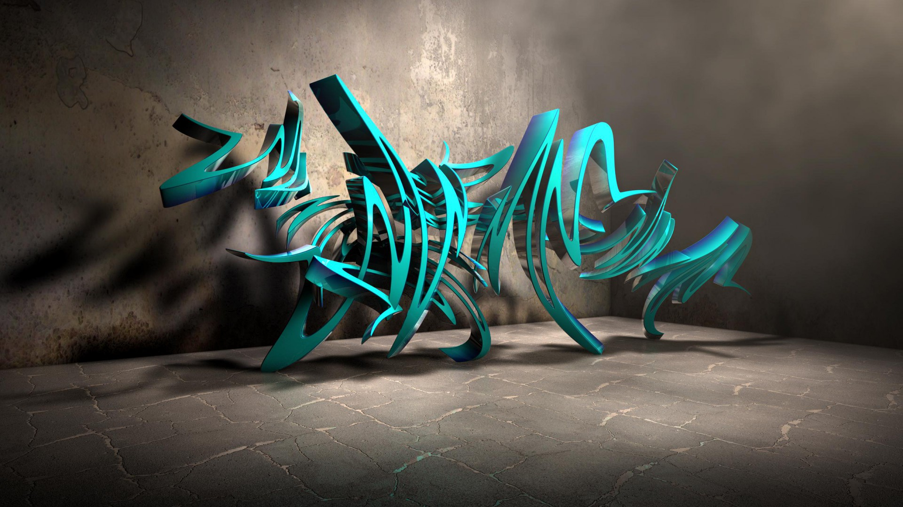

Quelques images




Les œuvres d’arts enrichissent notre patrimoine et se trouvent communément sous forme d’exposition dans les musées et galeries. Quand est-il pour les autres formes d’arts? La rue offre aux passants et aux publics des graphismes souvent éphémères qui naissent puis disparaissent au fil du temps. De nos jours, la société reste partagée sur le sujet des graffitis, certains considèrent ces inscriptions comme un acte de vandalisme et d’autres comme une œuvre picturale à part entière.